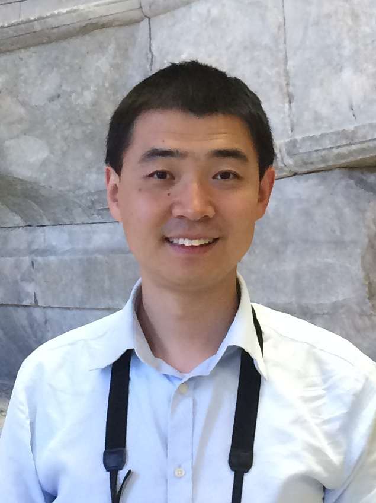

Ding Pan (潘鼎)
Associate Professor
Department of Physics and Department of Chemistry
Hong Kong University of Science and Technology
Education
- Sc.D. in Condensed Matter Physics, Institute of Physics, Chinese Academy of Sciences, Beijing, P. R. China (2011) Supervisor: Prof. Enge Wang
- B.S. in Physics, Special Class for the Gifted Young (00 Class), University of Science and Technology of China, Hefei, P. R. China (2005)
Research Experience
- Nov 2016 ~ Jun 2022, Assistant Professor, HKUST
- May 2014 ~ Oct 2016, Postdoctoral Researcher, Institute for Molecular Engineering, University of Chicago, US. Supervisor: Prof. Giulia Galli
- Jan 2011 ~ Apr 2014, Postdoctoral Researcher, Department of Chemistry, University of California Davis, US. Supervisor: Prof. Giulia Galli
- Sep 2008 ~ Mar 2009, Thomas Young Centre Junior Research Fellow, London Centre for Nanotechnology, University College London, London, UK. Supervisor: Prof. Angelos Michaelides
- Sep 2006 ~ Sep 2007, Visiting Researcher, Theory Department, Fritz-Haber-Institut der Max-Planck-Gesellschaft, Berlin, Germany. Supervisor: Prof. Angelos Michaelides, Prof. Matthias Scheffler
Awards
- 2022 HKUST School of Science Research Award
- 2021 Journal of Physics D: Applied Physics Emerging Leader
- 2020 Excellent Young Scientists Award (Hong Kong and Macau) (优秀青年科学基金项目(港澳)), Natural Science Foundation of China
- 2019 Deep Carbon Observatory Emerging Leader Award
- 2018 Croucher Innovation Award, Hong Kong
Academic Service
Referee for: Rev. Mod. Phys., Nature Geosci., Nat. Commun., Phys. Rev. Lett., ACS Nano, Phys. Chem. Chem. Phys., J. Chem. Phys., J. Phys. Chem., Sci. Rep., Geofluids, J. Phys. Chem. Solids.